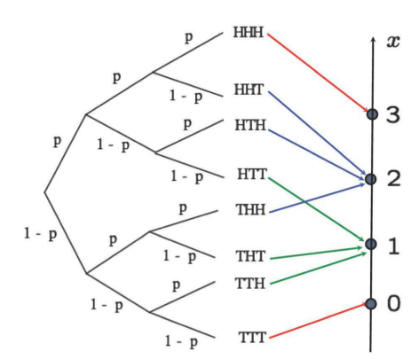
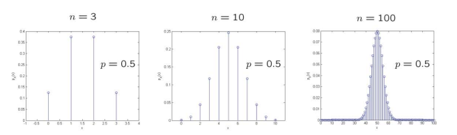

Week 5: Discrete Random Variables#
Discrete Random Variables#
This week you’ll learn what are random variables and the properties of discrete random variables.
Reminder#
Notations:
Factorial:
\(n! = n \times (n-1) \times (n-2) \times \cdots \times 3 \times 2 \times 1\)
0! = 1
Combination: The number of ways to choose \(r\) elements from a set of \(n\) elements.
\(^nC_k = \binom{n}{r} = \frac{n!}{k!(n-k)!}\)
Discrete random variables: take values in finite or countable set
Random variable examples
Bernouli:
A single success/failure experiment
Binomial:
The number of successes in a sequence of n independent experiments, each asking a yes–no question
Uniform:
Probability distributions with equally likely outcomes
Geometric:
The number of successive failures before a success is obtained in a Bernoulli trial
Random variables: Formalism#
A random variable (‘r.v.’) associates a value (a number) to every possible outcome
Mathematically: A function from the sample space \(\Omega\) to the real numbers
It can take discrete or continous values
Notation:
random variable: \(X\)
numerical value: \(x\)
We can have several random variables defined on the same sample space
A function of one or several random variables is also a random variable
if X and Y are r.v., then (X+Y) is also a r.v.
Probability mass function (PMF) of a discrete r.v. \(X\)#
it is the “probability law” or “probability distribution” of \(X\)
if we fix some \(x\) then “\(X = x\)” is an event
Notation:
\(P_X(x) = P(X=x) = P(\{\omega \in \Omega \quad s.t. \quad X(\omega)=x\})\)
Q12.
In 1968, an accountant named Charles Reep published an article in the journal of the Royal Statistical Society. After analysing more than 2200 football matches he concluded that 80 percent of goals were scored from plays of fewer than four passes. He claimed that three passes -a long ball, knockdown and strike - was the path for success. Taken from the book “Game changers” by Joao Medeiros.
Suppose that in a typical football match there are on average 900 plays. Out of those, only 100 have 4 or more passes. there are 5 goals per match
PMF calculation#
Binomial experiment from last week;#
Experiment: n independent tosses of a coin with \(P(Heads)=p\)
Sample space: Set of sequences of H and T, of length n
Random variable \(X\): number of heads observed
Model of: number of successes in a given number of independent trials

\(p_X(k) = ^nC_k \times p^k(1-p)^{(n-k)}, \quad for \quad k=0,1, \cdot ,n\)
\(\Omega = \{0,1,2,3\}\)

Experiment from textbook;#
Two rolls of a hexahedral die
\(z = X+Y \quad find \quad P_Z(z)\)
Let every possible outcome have probability \(\frac{1}{36}\)
Repeat for all \(z\):
Collect all possible outcomes for which \(Z\) is equal to \(z\)
add their probabilities
Fill this table and construct the PMF
Q13.
If a RV follows a binomial distribution with probability of success p on a particular trial, then the probability of getting k successes in n trials is given by
PMF calculation#
Binomial experiment from last week;#
Experiment: n independent tosses of a coin with \(P(Heads)=p\)
Sample space: Set of sequences of H and T, of length n
Random variable \(X\): number of heads observed
Model of: number of successes in a given number of independent trials
\(p_X(k) = ^nC_k \times p^k(1-p)^{(n-k)}, \quad for \quad k=0,1, \cdot ,n\)
\(\Omega = \{0,1,2,3\}\)
Experiment from textbook;#
Two rolls of a hexahedral die
\(z = X+Y \quad find \quad P_Z(z)\)
Let every possible outcome have probability \(\frac{1}{36}\)
Repeat for all \(z\):
Collect all possible outcomes for which \(Z\) is equal to \(z\)
add their probabilities
Fill this table and construct the PMF
Q14.
In Excel type: =RAND() into cell Al. This will give you will get a uniformly distributed random number over zero-one. Copy this to Bl:O1; In cell Pl type =AVERAGE(Al:O1). In Cell Ql type =STDEV.S(Al:O1). In Cell Rl type =STDEV.P(Al:O1). Copy the line Al:Rl to lines 2:50. You now have 50 samples of 15 random numbers plus estimates of the mean and sample and population standard deviations. In cell P51, type =AVERAGE(Pl:P50). In cell Q51 type =AVERAGE(Ql:Q50) In cell R51 type =AVERAGE(Rl:R50) . In cell P52 type =STDEV.S(Pl:P50).
import numpy as np
import matplotlib.pyplot as plt
from scipy.stats import norm
# Define the dimensions of the matrix
rows = 15
columns = 50
# Generate the random matrix
random_matrix = np.random.rand(rows, columns)
# Print the random matrix
# print(random_matrix)
# Calculate the mean
mean = np.mean(random_matrix)
# Calculate the sample variance
sample_variance = np.std(random_matrix, ddof=1)
# Calculate the population variance
population_variance = np.std(random_matrix)
print("Mean:", mean)
print("Sample standard deviation:", sample_variance)
print("Population standard deviation:", population_variance)
Mean: 0.525260780112386
Sample standard deviation: 0.2892796834015521
Population standard deviation: 0.2890867659520183
# Flatten the matrix to a 1D array
data = random_matrix.flatten()
# Create a histogram
plt.hist(data, bins=10, density=True, alpha=0.5, color='b', label='Histogram')
# Fit a normal distribution to the data
mu, std = norm.fit(data)
# Plot the PDF of the fitted normal distribution
xmin, xmax = min(data), max(data)
x = np.linspace(xmin, xmax, 100)
p = norm.pdf(x, mu, std)
plt.plot(x, p, 'k', linewidth=2, label='Fitted Normal Distribution')
plt.title("Histogram and Fitted Normal Distribution")
plt.xlabel("Value")
plt.ylabel("Frequency")
plt.legend()
plt.show()
# Compute the means for each rows
row_means = np.mean(random_matrix, axis=0)
# Create a histogram of the row means
plt.hist(row_means, bins=10, density=True, alpha=0.5, color='b', label='Row Means')
# Fit a normal distribution to the row means
mu, std = norm.fit(row_means)
# Plot the PDF of the fitted normal distribution
xmin, xmax = min(row_means), max(row_means)
x = np.linspace(xmin, xmax, 100)
p = norm.pdf(x, mu, std)
plt.plot(x, p, 'k', linewidth=2, label='Fitted Normal Distribution')
plt.title("Histogram of Row Means and Fitted Normal Distribution")
plt.xlabel("Mean of Rows")
plt.ylabel("Frequency")
plt.legend()
plt.show()
import numpy as np
import matplotlib.pyplot as plt
from scipy.stats import norm
# Generate random data from a normal distribution
mean = 0
std_dev = 1
data = np.random.normal(mean, std_dev, size=(15, 50))
# Flatten the data to a 1D array
data = data.flatten()
# Create a histogram
plt.hist(data, bins=20, density=True, alpha=0.5, color='b', label='Histogram')
# Fit a normal distribution to the data
mu, std = norm.fit(data)
# Plot the PDF of the fitted normal distribution
xmin, xmax = min(data), max(data)
x = np.linspace(xmin, xmax, 100)
p = norm.pdf(x, mu, std)
plt.plot(x, p, 'k', linewidth=2, label='Fitted Normal Distribution')
plt.title("Histogram and Fitted Normal Distribution")
plt.xlabel("Value")
plt.ylabel("Frequency")
plt.legend()
plt.show()